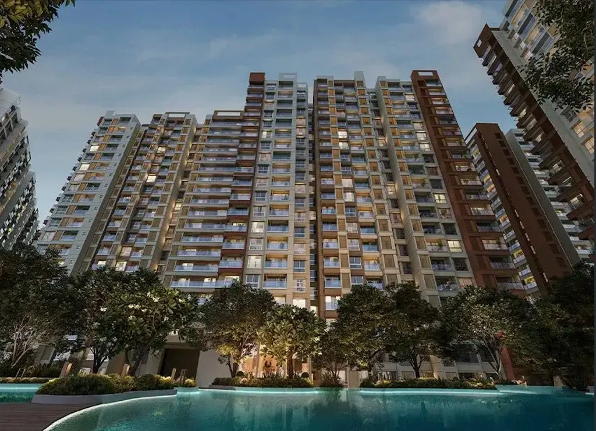

1. Clinical Lexicon & Tone
HNI buyers ignore generic marketing jargon. We operate as independent, data-driven advisors. Never use terms that imply urgency or generic "luxury".
| Banned Marketing Fluff | Approved Clinical Terminology |
|---|---|
| "Buy Now" / "Submit" | "Request Advisory Call" / "Get Buyer Analysis" |
| "Luxury" / "Premium" | "Institutional-Grade" / "A-Grade" |
| "Features" / "Amenities" | "Asset Fundamentals" / "Township Infrastructure" |
| "Best" / "Perfect" | "Objective Evaluation" / "Data-Driven" |
2. WCAG AAA Color Palette
A strict 5-variable system. Every hex code outside of these is purged. Contrast ratios are strictly mathematically verified.
3. Fluid Typography Architecture
Cormorant Garamond exclusively for editorial authority. Manrope exclusively for functional data and body text. No media query snapping; mathematically fluid scaling.
Institutional-Grade Assets.
Objective Evaluation Framework
75m Lake Buffer Compliance
The township infrastructure is evaluated across 69 distinct parameters, yielding a clear risk profile before any capital is committed. We utilize raw data to construct our advisory reports.
4. Geometry & Motion Physics
Strictly 4px border radiuses. Strictly 0.5px hairlines. Hover interactions are "Cinematic & Flat" (no bouncy shadows, just a luxurious 400ms visual dimming).
Cinematic UI Card
Hover over this card. Notice it does not physically lift up. The background simply dims smoothly via a 0.4s transition. The borders are 0.5px hairlines.
5. Photographic Art Direction
Builder 3D renders natively look cheap and hyper-saturated. We enforce a global filter: saturate(0.85) contrast(1.05); to establish a cohesive, moody, high-end editorial grade.

6. Input & Form Architecture
HNI clients do not fill out "squeeze pages." Our forms must feel like secure, private banking applications. No bubbly inputs. We use strict 0.5px borders, 4px radiuses, and crisp typography.
7. Clinical Badges & Tags (The Anti-Pill Rule)
Standard web design uses rounded "pill" tags (border-radius: 4px). We strictly reject this. All tags (RERA, Status, Scores) must use our rigid 4px geometry to maintain an architectural, blueprint-like aesthetic.
8. Cinematic Modals & Overlays
Pop-ups should not feel like marketing interruptions. Modal backdrops must use a heavy cinematic blur (backdrop-filter: blur(8px)) with a deep, desaturated overlay (rgba(10,10,10,0.85)) to completely focus the user's attention.
9. Text-on-Image Legibility
Placing raw text directly over a photograph severely compromises legibility. We enforce a strict "Anchored Gradient" rule. Whenever text sits on an image, a deep navy gradient (fading from 95% opacity to 0% at the 60% mark) must anchor the text from the bottom or top, guaranteeing a 7.0:1 AAA contrast ratio.
10. The "Editorial Card" Standard
Data cards should never use default CSS box-shadows. Shadows look like generic web templates. Our cards use strict 0.5px hairlines, generous internal padding (min 1.5rem), and rely entirely on typography sizing to establish hierarchy.
Township Data
Verified11. Inline Link Behavior
Default web links (blue text, thick underlines) destroy the luxury reading experience. All inline references in body text must use our AAA copper with a heavily offset, semi-transparent underline that solidifies entirely upon a cinematic 400ms hover.
Before allocating capital to this asset, we strongly recommend reviewing our comprehensive 69-point diligence report. The report contains proprietary data regarding the builder's delivery history and legal land titles.
Part II: The Component Library
Every standard web component strictly translated into the HNI Architectural standard. Copy and paste these structures directly into production.
Accordions & Toggles
No floating boxes. Items are separated by strictly 0.5px hairlines. The expansion icon is a minimalist SVG.
What is the legal land title status?
-The land title has been verified across 40 years of records. It possesses an A-Khata certification with zero encumbrances from the BDA. A comprehensive legal dossier is available in the diligence report.
What are the township infrastructure details?
+Button Hierarchy
Buttons must never be fully rounded pills. Primary uses the copper gradient. Secondary uses a 0.5px hairline outline. Ghost buttons are pure text with an offset underline.
Tabs (Top & Side)
Tabs are constructed using pure typography and hairline indicators. No chunky background boxes.
Financial data module content goes here.
Pricing & Data Tables
Tables must feel like high-end financial documents. Use muted slate headers, 0.5px dividers, and right-aligned numerical data.
Team & Testimonials
Testimonials use large, authoritative serif typography. Team cards are highly structured with sharp geometries.
"The advisory provided by Acre&Key bypassed the standard developer marketing and provided raw, actionable data on asset appreciation."
Progress Bars & Counters
Avoid thick, colorful progress bars. Use ultra-thin (2px) tracks. Counters must pair massive serif numerals with tiny, tracked-out sans-serif labels.
Lists & Breadcrumbs
Hero Architecture Blueprint
The standard V2 entrance. Split layout: Editorial typography on the left, cinematically filtered architectural photography on the right.
Forms: Checkboxes & Radios
Native browser checkboxes look cheap. We use custom SVGs and pure CSS to ensure strict 4px geometry on checkboxes and sharp circular selections for radios.
Diligence Selection
Timeline Horizon
Alerts & Tooltips
Success messages and tooltips must avoid standard green/red blocks. We use architectural boxes with sharp copper anchor lines.
Report Dispatched
The 69-point buyer analysis has been securely emailed to your registered address.
Pagination
Minimalist progression logic for blogs and property listing pages.
Gallery & Masonry Grids
Galleries use strict 4px corners and uniform grid gaps. No complex overlapping or rotating images. Pure architectural discipline.
Global Header & Navigation
The primary structural navigation. It must stick to the top with a 16px blur backdrop and a single 0.5px hairline separating it from the content.
Video & Media Players
Standard YouTube or Vimeo embeds ruin immersion with heavy branding. All videos must sit behind our custom cinematic overlay with a minimalist play button.
Loading & Shimmer States
Spinning wheels are unacceptable. When calculators or APIs load data, use structural shimmer skeletons that mimic the exact geometry of the incoming content.
Global Footer Architecture
The footer acts as the anchor. It uses the deep navy background. Links are strictly organized in grid columns without bulky separators.
Institutional-grade real estate advisory for the ultra-HNI investor. Data-driven allocation.
Editorial Portrait Cards (Personas)
Used for buyer personas or deep-dive features. This component perfectly executes the Anchored Gradient rule on a portrait aspect ratio, pulling the user into a cinematic story.
Editorial Data Cards (Checklists)
Used for feature lists or diligence breakdowns. Crucial Rule: The overlapping badge must strictly use the 4px micro-edge geometry. Circular pill badges are banned in the HNI architecture.
Editorial Process Cards (Methodology)
Used for step-by-step methodologies. This card perfectly blends Serif numerals with Sans-Serif data blocks, utilizing internal Titanium Frost containers and strict 4px tags (banning standard pill shapes).
Clarify
Mandate calibration & comprehensive requirement definition.
Requirement Mapping
Family lifestyle, commute radii (ORR/Silk Board) & non-negotiables
Micro-Market Universe
Filtering out 95% noise across Whitefield, North Bangalore & Central
Executive Team Profiles
Used for horizontal leadership grids. Crucial Correction: We stripped out the generic, fuzzy drop-shadows seen in standard templates and replaced them with our structural 0.5px hairline. All headshots must be passed through the cinematic desaturation filter.
Meet The Team


Cinematic Gallery Player
Used for showcasing property renders and imagery. Crucial Correction: The raw text over the image violates AAA contrast. We must inject dual Anchored Gradients (top and bottom) to protect the typography and controls, while enforcing 4px geometries on the navigation arrows and thumbnail strips.
Logo Architecture & Background Adaptability
The typographic mark must maintain strict aesthetic authority across all environments. Notice how the ampersand shifts from deep Copper on light backgrounds to the High-Contrast Peach on dark backgrounds to ensure WCAG AAA compliance without losing the brand identity.
Typography Hierarchy & Guidelines
The HNI architecture relies on a strict dual-font system. Cormorant Garamond provides editorial authority for display and headings. Manrope provides extreme technical legibility for data, kickers, and body text.
The Architecture of Wealth
Usage: Strictly reserved for Hero sections. Must use clamp() for fluid responsive scaling without breakpoints.
Institutional Grade diligence.
Usage: Section dividers, grid headers, and primary content breaks. Never uppercase.
Usage: Eyebrows above headings, category tags, and data pillar labels. Provides structural metadata.
We filter out 95% of the noise in the market to bring you absolute clarity. Our independent advisory evaluates the opportunity, uncovers the risks, and negotiates entirely on your behalf.
Usage: All paragraph text. Use 1.1rem for lead paragraphs (like above), 0.95rem for standard card reading.
Usage: UI elements, footnotes, card tags, timestamps, and utility links.